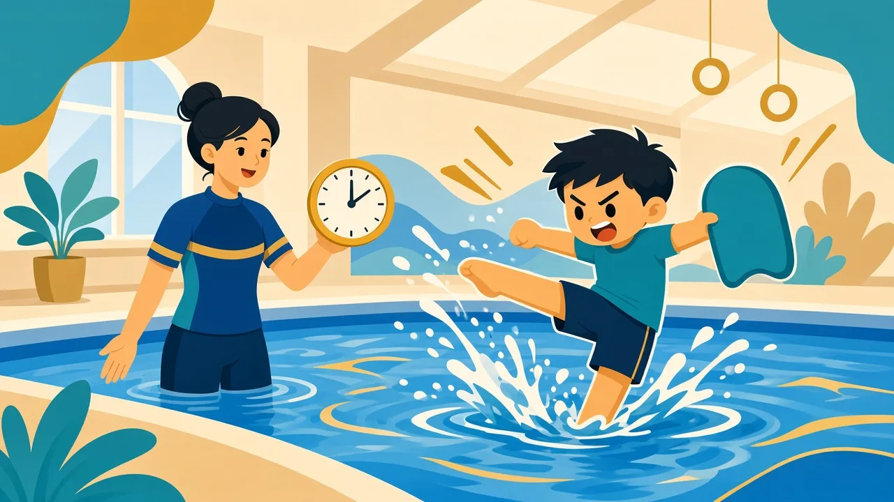

行為是訊息：先理解原因，再調整環境與教學

正向行為管理不是單純「控制孩子」或「懲罰不當行為」，而是用清晰課堂結構、正面溝通、環境安排與一致回饋，提高孩子成功參與的機會。核心問題不是「怎樣令他聽話」，而是「他為甚麼這樣做？我可以怎樣調整，令合適行為更容易出現？」
溫馨提示：本頁為家長教育整理，供認識特殊需要與游泳教學方向參考，並非醫療診斷或治療建議。孩子個別安排請 WhatsApp 與教練商討。
例如：不肯下水、不跟指令、離開水道、等候時走來走去、哭喊、對流程改變不安、對水花／觸感強烈反應、摀耳。請先考慮：他是否不明白要求、焦慮、感官過載、面對突變、難度太高、疲倦，或無法用語言表達需要？摀耳往往是防禦嘈音，不是搗亂；強行拉開雙手通常會加劇恐懼。


簡單記錄有助找出模式：行為前發生了甚麼（前因）？孩子實際做了甚麼（行為）？之後發生了甚麼（結果）？例如：教練要求由淺水到較深水域（前因）→ 孩子哭著拒絕（行為）→ 若每次都因此取消練習（結果），「哭鬧＝逃避」的連結可能被強化。較佳做法是預告、拆細步驟、先在熟悉環境練習、給選擇，並對小成功即時讚賞。
行為常見功能可以想成四類：想得到（物品、活動）、想逃避（難度太高）、想被注意，或感官需要（例如尋求水壓）。家中與課堂的規則、讚賞盡量一致，孩子較易跟從。也要分辨「還未學會」與「不想做」：技能不足要用拆步與示範；若已會卻用哭逃避，則改為輔助完成一小步或提供替代溝通，而不是每次完全取消目標。
不是。規矩仍然重要，尤其涉及泳池安全。差別在於：以預防與教導為主，懲罰不是唯一工具。
要分辨「恐懼／感官過載」與「學會用哭逃避任務」。前者需要降難度與調節；後者需要輔助完成一小步或提供替代溝通，而不是每次都完全取消目標。詳情可與教練討論。